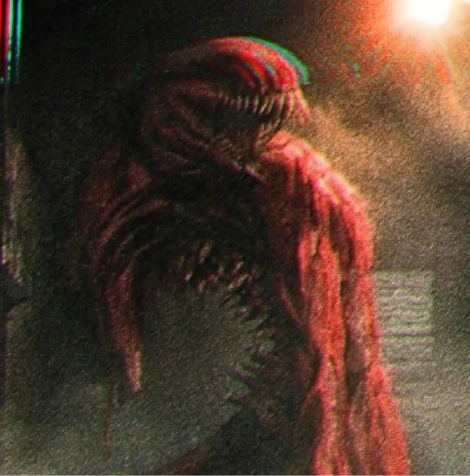
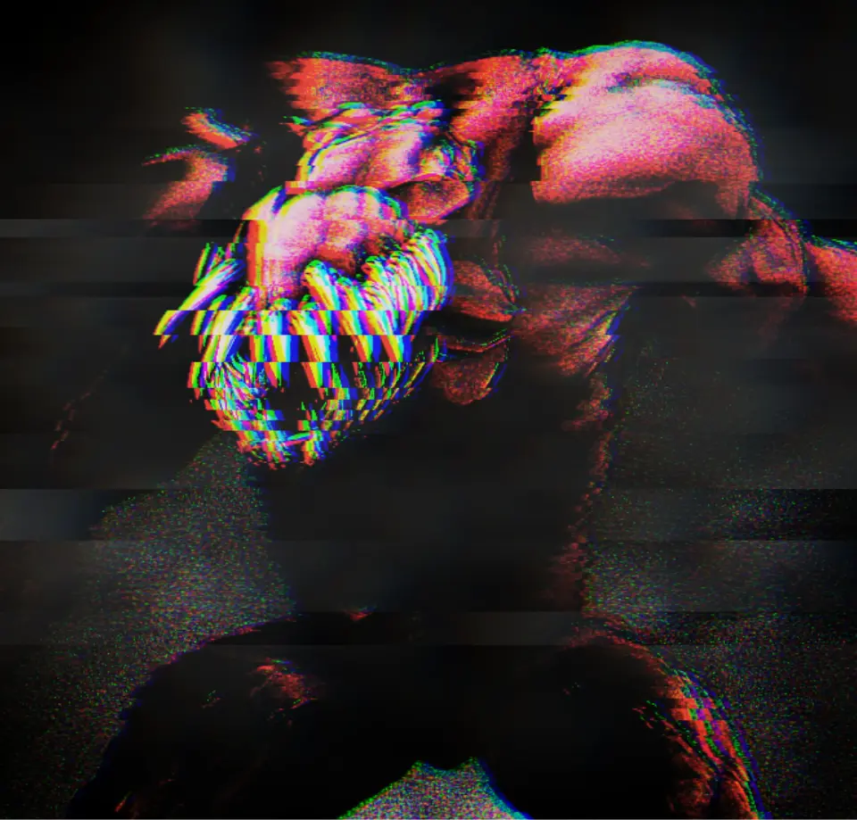

Insira suas próprias origens, habilidades, rituais e trilhas. Os dados são guardados neste navegador e podem ser exportados.
Para editar os textos originais, abra dados.js. Para editar aparência e medidas, abra estilo.css e imersao.css.
dados.js
estilo.css
imersao.css


Escolha um objeto sobre a mesa
SALA 7 · ORDO REALITAS
Clique para acender a lâmpada